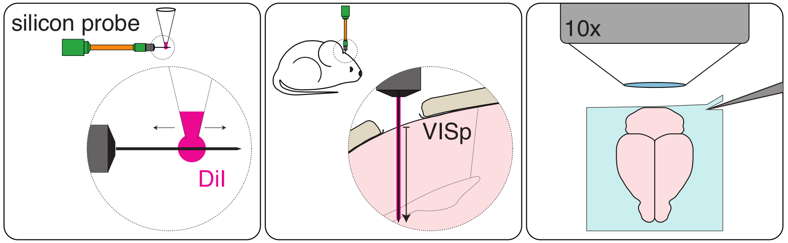
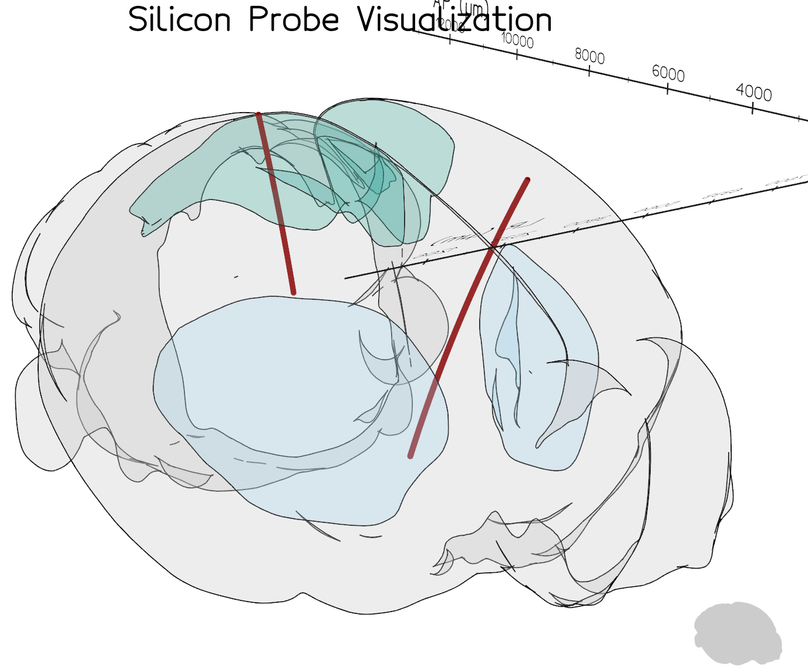

Silicon probe tracking#
Analysis of silicon probe tracks (e.g., Neuropixels) in brains imaged post-hoc in a standard coordinate space
Introduction#
The aim of electrophysiological recordings using silicon probes is to record neuronal activity across brain regions and animals. It is therefore fundamental to record precisely the localisation of the probe (or multiple probes) in each brain and be able to compare probes across animals.
Here we describe a tool for the analysis of silicon probe tracks (e.g. Neuropixels) in brains imaged post-hoc in a standard coordinate space. This tool is packaged with brainreg, as part of the BrainGlobe suite of computational neuroanatomy tools.
Before tracing probe tracks#
In order to label the probe penetration track in the brain, the probe is delicately coated with DiI (Molecular Probes, Cat# V22885) using a pipette tip (Fig. 1, left). The probe is then attached to a micromanipulator, and the probe tip lowered to touch the surface of the brain (e.g. in head-fixed mice). This position is recorded as position “zero”. The probe is then introduced in the brain at a speed of ~10μm per second to the desired penetration depth (in our case 1750μm; Fig. 1, centre).

Figure 1.Note
The final penetration depth has to be recorded precisely (e.g., with the micromanipulator readout) in order to know how much of the probe shank was used to record neuronal activity. This will allow comparing traced probe tracks and electrophysiological data.
When the experiment is done and the probe is retracted, the animal is anaesthetised and perfused with PFA 4% following standard perfusion protocols. The brain is carefully extracted and left in PFA 4% overnight.
Note
To ensure high quality image registration, it is essential that the brain is properly perfused in order to decrease the autofluorescence of blood vessels. It is also important that the brain is extracted from the skull carefully in order to avoid tissue damage.
The brain is then thoroughly washed with 100mM PBS and imaged (e.g. by Serial 2-Photon Tomography; Fig. 1, right). We imaged 2 channels (one where DiI signal is detected and one with background fluorescence only) at a resolution of x = 5μm, y = 5μm, z = 20μm.
Note
It is important to image both the DiI probe signal and the brain’s background fluorescence in two independent channels. The background signal will be used to register the brain into standard space (since the probe signal might interfere with the quality of registration).
Brain registration to an atlas#
To track the probe in standard space, the brain must first be registered to an atlas using brainreg.
Before registration, brainreg needs to be installed, please follow the instructions here. Once installed, we can proceed to register the imaged brain.
Note
Make sure you activate your conda environment before starting
You will need:
The path where the brain image stack (DiI signal channel) is located
The path where the brain stack (background fluorescence channel) is located.
The path where you want the registration result to be saved
The resolution at which the brain was imaged
To register your brain to an atlas, please follow the instructions for brainreg here.
A new output directory has been created, which contains the registered brain. We are now ready to manually trace the probe track.
Probe track tracing#
Caution
Make sure your conda environment is still activated!
To open the graphical user interface, open napari and then load the brainglobe-segmentation plugin (see
User guide).
The brainglobe-segmentationgraphical user interface opens and shows a set of tools. You can then load your brainreg output
directory, and follow the main brainglobe-segmentation instructions here for
segmenting a 1D track. Setting Spline points will determine how many times along the length of the track that
the brain region is sampled at. This can be used to determine the brain region for each recording site on your probe.
After the spline fit is performed, a csv file will be saved in brainreg_output/segmentation/atlas_space/tracks for each track.
You can then find the brain area for each recording channel by matching the distance in the csv file and the
depth to the geometry of your recording probe.
Visualize the probe track with brainrender#
If you then click the To brainrender button, a .npy file will be saved for each track.
With brainrender, you can load the npy file using the scene class.
This will provide a 3D interactive display of the probe tracks:

Visualisation of two probe tracks using brainrenderTip
The code to run this example can be found at probe_tracks.py.
Tutorial adapted from instructions by Mateo Vélez-Fort and Jingjie Li